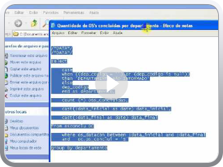
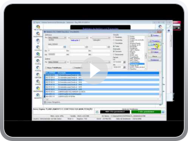

Relatório de Cadastramentos- exportação para Excel - Sigma
Indicador MTBF e Disponibilidade de uma Máquina
Relatório de Custo de Peças por Máquina
Pesquisas Personalizadas em SQL
Relatório descritivo de Ordem de Serviço
Relatório Quantitativo de Ordem de Serviço
Relatório de Horas Trabalhadas
Relatório de tempo de Máquina Parada
Adding Video to Blog by VideoLightBox.com v2.1